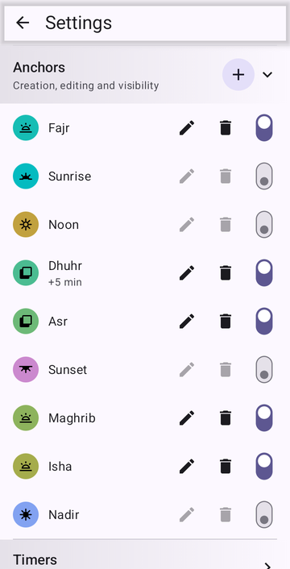
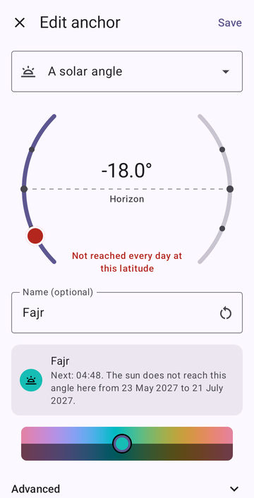
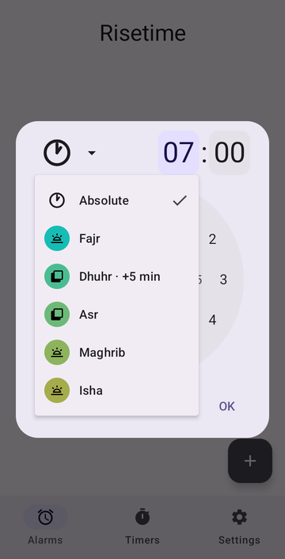
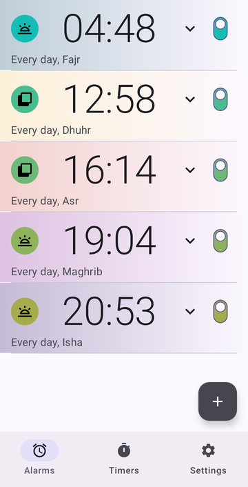
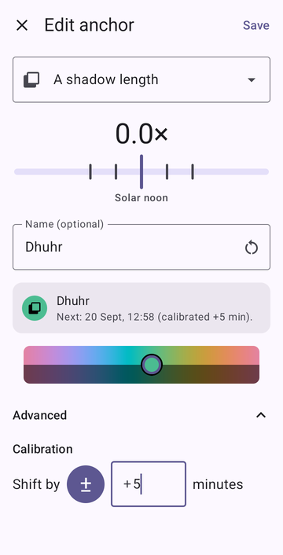

What Risetime does for prayer times
Risetime is an Android alarm clock that follows the sun, and each of the five daily prayers begins at a moment of the sun. So each prayer can be one alarm, set once, that moves with the seasons by itself.
It is an alarm clock, not a complete prayer app: there is no Qibla compass and no adhan screen. What it does is make sure you are awake — without ads, and without any internet permission.
When does each prayer begin? Fajr to Isha, by the sun
| Prayer | Begins when… | In Risetime |
|---|---|---|
| Fajr | dawn appears — the sun is a set angle below the horizon | a solar angle, morning |
| Dhuhr | the sun has passed its highest point | a shadow of 0× — solar noon — often a few minutes later |
| Asr | a shadow has grown, beyond its length at noon, by one length of its object (Shafi'i, Maliki, Hanbali) or two (Hanafi) | a shadow length, afternoon: 1× or 2× |
| Maghrib | the sun has set | Sunset, or a solar angle just below the horizon |
| Isha | the last light has gone — the sun is a set angle below the horizon | a solar angle, evening |
In Risetime, each of these is an anchor: a moment of the sun it recomputes every day. An alarm sits on an anchor, or at a distance before or after it. How anchors work

Fajr and Isha angles by convention
What angle is Fajr? Between 12° and 20° below the horizon, depending on the convention; Isha, between 12° and 18°. There is no single right answer — only the one your mosque follows.
| Convention | Fajr | Isha | Used mostly in |
|---|---|---|---|
| Muslim World League | 18° | 17° | Europe, the Far East, parts of the Americas |
| ISNA | 15° | 15° | North America |
| Egyptian General Authority of Survey | 19.5° | 17.5° | Egypt, Africa, the Levant |
| Umm al-Qura, Makkah | 18.5° | 90 min after Maghrib (120 in Ramadan) | Saudi Arabia |
| University of Islamic Sciences, Karachi | 18° | 18° | Pakistan, Bangladesh, India, Afghanistan |
| Diyanet | 18° | 17° | Turkey |
| Kemenag | 20° | 18° | Indonesia |
| JAKIM | 20° | 18° | Malaysia |
| MUIS | 20° | 18° | Singapore |
| Morocco | 19° | 17° | Morocco |
| UOIF | 12° | 12° | France |
| Institute of Geophysics, Tehran | 17.7°* | 14° | Iran; Maghrib at 4.5° |
| Shia Ithna Ashari (Leva Institute, Qom) | 16° | 14° | Shia communities; Maghrib at 4° |
| Moonsighting Committee | 18°, bounded by a seasonal number of minutes | UK, North America — Risetime doesn't compute this rule yet: follow your mosque's timetable | |
* Risetime sets angles in half-degree steps, so 17.7° becomes 17.5° — a minute or two apart, which calibration closes. Sources: Aladhan, Pray Times.
Not sure which your mosque uses? When you create the Fajr anchor, the editor shows when it happens next — Next: 04:48. Compare it with today's Fajr on your mosque's timetable and adjust the angle until they agree; then fine-tune with calibration.

How to set a Fajr alarm on Android — and the other four
- Set your location, once (Settings → Celestial events location).
- In Settings → Anchors, press + and create one anchor per prayer. Name each one — the app itself uses no religious names, so the names are yours.
- Fajr — a solar angle, morning, at your convention's angle.
- Dhuhr — a shadow length of 0×.
- Asr — a shadow length, afternoon: 1×, or 2× for Hanafi.
- Maghrib — Sunset, or a solar angle just below the horizon.
- Isha — a solar angle, evening. For Umm al-Qura: Sunset, with a 90-minute offset on the alarm.
- On the Alarms tab, set an alarm on each, repeating every day.
The step-by-step for anchors and alarms, with screenshots: how to set a sunrise or sunset alarm on Android.


An adhan recording can be your alarm sound: open the alarm's card, then Sound, and pick your own audio file. For Jumu'ah, add an alarm on your Dhuhr anchor that repeats on Fridays — thirty minutes before, say, to get there in time.
Match your mosque's timetable
A mosque's timetable may differ from any calculation by a few minutes, by choice — many set Dhuhr a few minutes after the sun's highest point. To align with it, open the anchor, then Advanced → Calibration, and shift it by up to 30 minutes. Every alarm on that anchor follows.

Fajr and Isha in the UK summer: when dawn never comes
In London, Manchester or anywhere far north, the sun does not sink to 18° below the horizon for part of the summer — in London, from 23 May to 21 July. Risetime tells you when you create the anchor, and on those days the alarm stays silent rather than ring at an invented time.
Mosques at these latitudes use their own rule for those weeks. A common one divides the night — sunset to sunrise — into seven equal parts: Fajr at the start of the last part, Isha at the end of the first. Risetime can follow it with an anchor that is a fraction of the night: set 7 parts, then position 6 for Fajr, or position 1 for Isha. Your mosque's timetable says which rule it uses.
Tahajjud: the last third of the night
The last third of the night moves with the seasons as much as dawn does. An anchor that is a fraction of the night — 3 parts, position 2 — marks its start every night, whatever the length of the night. Risetime counts that night from sunset to sunrise; those who count it from Maghrib or Isha until Fajr will find their own timetable a little apart.
Suhoor alarm for Ramadan
Suhoor ends at Fajr — many timetables stop it earlier, at imsak, about ten minutes before — and Iftar comes at Maghrib: your anchors already hold both. For a Suhoor alarm, set an alarm before your Fajr anchor, forty-five minutes before for example. It then follows dawn itself, not sunrise, which a fixed offset from sunrise cannot do.
Risetime has no lunar calendar and does not try to have one: switch your Suhoor alarm on when your mosque announces the start of the month, and off at the end.
Private by design, and it rings
No ads. No account. No location sent anywhere: Risetime has no internet permission, so the operating system itself stops it from connecting. Your location is used on your phone, to work out where the sun will be.
A prayer alarm is only useful if it rings. Some phones stop apps in the background to save battery; Settings → Reliability checks what your phone needs and gives each missing item a Fix button. After a restart, alarms ring even before you first unlock the phone.
Risetime is free for up to three alarms and three timers — for good. Need more? Use those three first, and see if it's worth your support: supporters get unlimited alarms and timers, yearly or once. If not, I'll be happy to hear you out.
Something missing for your practice?
Write to me at contact@risetime.app — a convention this page doesn't list, a rule your mosque follows, a moment Risetime can't yet express.
Set your five prayers once. They follow the sun.
Google Play Open testingRisetime is in open testing, so you join the test first and install from Play afterwards. Without that step Play may tell you the app isn't available in your country.